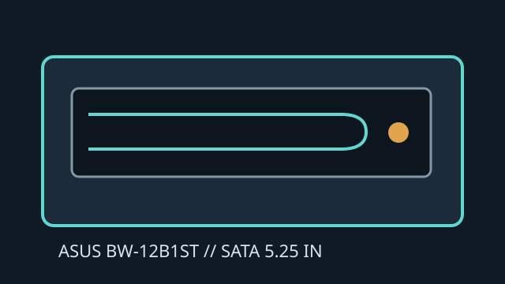

[ INTERNAL BLU-RAY WRITER ]
ASUS BW-12B1ST
Internal 12× Blu-ray Disc writer with backward-compatible DVD and CD recording. Drive and media ratings are separate; actual burn speed depends on media, firmware and recording mode.

IDENTIFICATION: ASUS BW-12B1ST; match the exact faceplate/model label before applying these ratings.
Documented specifications
| Media read/write formats | Reads BD-ROM, BD-R/RE (single and dual layer), DVD-ROM, DVD±R/RW, DVD±R DL, DVD-RAM and CD-ROM/R/RW. Writes BD-R/RE, DVD±R/RW, DVD±R DL, DVD-RAM and CD-R/RW. |
|---|---|
| Maximum speeds | BD-R 12× (single layer), BD-R DL 8×, BD-RE 2×; DVD±R 16×, DVD±R DL 8×, DVD-RAM 12×; CD-R 48× and CD-RW 24×. BD-ROM read up to 8×. |
| Interface and physical bay | Internal 5.25-inch half-height, tray-loading desktop drive with SATA data and SATA power connections. Secure it in a compatible bay and verify connector, clearance and bezel fit. |
| Host and firmware compatibility | Requires a motherboard/controller SATA port, SATA power lead and OS that enumerates a SATA ATAPI optical drive. Blu-ray playback additionally needs suitable host software, codecs and protected-video support. Update firmware only with the exact model and regional/OEM revision. |
| Scope note | This model is a standard BD writer; do not infer UHD playback or BDXL recording from the Blu-ray logo. Its manual lists model-specific media and speeds. |
Manufacturer and manual sources
- ASUS — BW-12B1ST supportManufacturer support and product-specific documentation entry.
- ASUS BW-12B1ST datasheetManufacturer-listed model datasheet and product ratings.
- ASUS — Download CenterManufacturer documentation and support retrieval guidance.
Do not treat maximum ratings as guaranteed sustained speeds; verify the precise media code and firmware qualification.